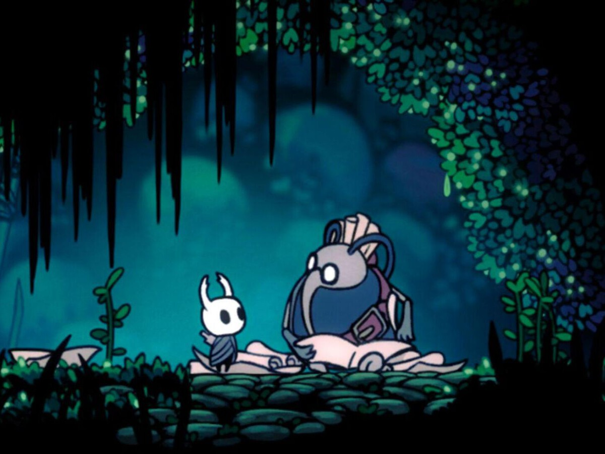

¡Cornifer el Cartógrafo!

Cornifer es uno de los NPCs más queridos y útiles de Hollow Knight. Es un cartógrafo entusiasta que se dedica a explorar las peligrosas ruinas de Hallownest para trazar mapas detallados de cada zona. Es el esposo de Iselda, quien dirige la tienda de mapas en Bocasucia.
A pesar de los peligros, la sed de aventura de Cornifer lo lleva a los lugares más recónditos: desde la sofocante Cumbre de Cristal hasta los húmedos Paramos Fúngicos, siempre armado con su pluma y papel.

El Arte de la Cartografía
Cornifer no solo vende mapas, él vive por ellos. Cada vez que llegas a una zona nueva, su mapa es esencial para no perderse. Sin embargo, sus mapas suelen estar incompletos, ya que deja que el Caballero termine de explorar y completar los detalles restantes por su cuenta.
- 📍 Hogar: Bocasucia (Tienda de Iselda)
- 🎵 Habilidad: Tarareo detectable a distancia
- ✍️ Herramientas: Tinta, papel y pluma
- 🛡️ Valentía: Explora zonas llenas de monstruos
Su Relación con Iselda
Mientras Cornifer está en el campo de trabajo, su esposa Iselda se encarga de vender suministros cartográficos en Bocasucia. Aunque Iselda a veces se queja de lo mucho que él se ausenta, es evidente que ambos comparten un vínculo profundo basado en su negocio familiar.
"¡Oh! ¿Un cliente? Qué alegría encontrar a otro viajero en estos túneles. Tengo justo lo que necesitas para no perderte..."

El Fin del Viaje
Una vez que has comprado todos sus mapas o has avanzado lo suficiente en la historia, Cornifer finalmente se retira de la exploración para descansar en Bocasucia. Podrás encontrarlo durmiendo plácidamente en su cama, mientras su tarareo se convierte en un suave ronquido.